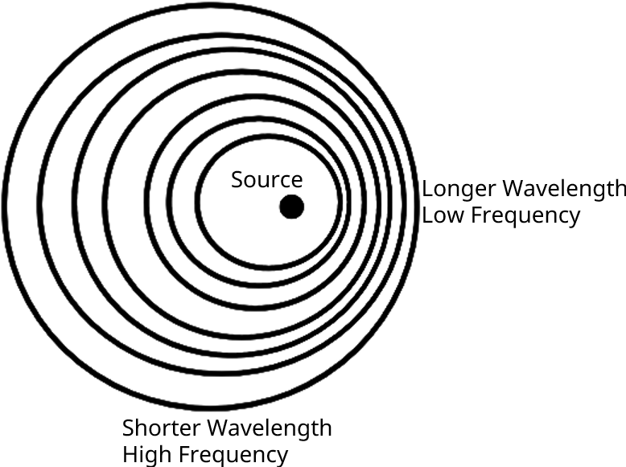

From \(\eta = a \cos (kx + ly + mz - \omega t) = a \cos (\mathbf{K} \cdot \mathbf{x} - \omega t)\) the wavelength is \[ \lambda = \frac{2\pi}{K} \] The magnitude of the phase velocity is \( c = \omega/K \), and the direction of propagation is parallel to \( \mathbf{K} \), so the phase velocity vector is \[ \mathbf{c} = (\omega/K)\, \mathbf{e}_K \] where \( \mathbf{e}_K = \mathbf{K}/K \), \( c_x = \omega / k \), \( c_y = \omega / l \), and \( c_z = \omega / m \) are each larger than the resultant \( c = \omega / K \), because \( k \), \( l \), and \( m \) are individually smaller than \( K \) when all three are non-zero as \(K^2 = k^2 + l^2 + m^2\). Any of the three axis-specific phase speeds is called the trace velocity along its associated axis
If sinusoidal waves exist in a fluid moving with uniform speed \(\mathbf{U}\), then the observed phase speed is \(\mathbf{c}_0 = \mathbf{c} + \mathbf{U}\). Forming a dot product of \(\mathbf{c}_0\) with \(\mathbf{K}\) and using \(\mathbf{c} = (\omega/K)\, \mathbf{e}_K\) produces \[ \omega_0 = \omega + \mathbf{U} \cdot \mathbf{K} \] where \(\omega_0\) is the observed frequency at a fixed point, and \(\omega\) is the intrinsic frequency measured by an observer moving with the flow. It is apparent that the frequency of a wave is Dopplershifted by an amount \(\mathbf{U} \cdot \mathbf{K}\) in non-zero flow
